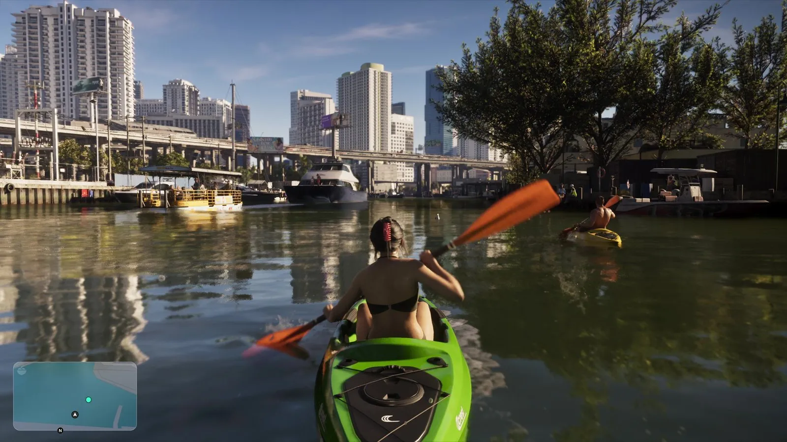
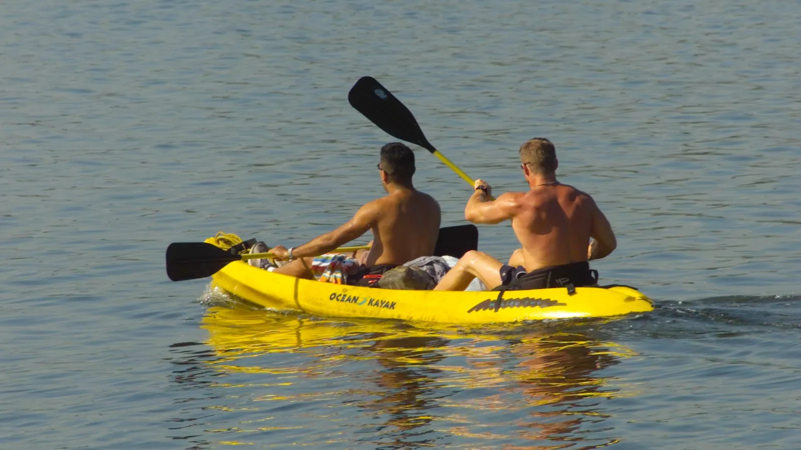
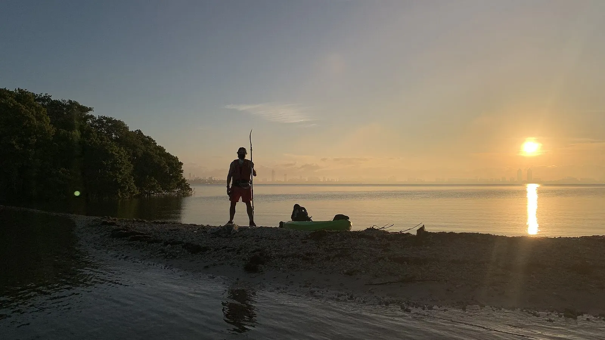

Каяк среди высоток Вайс-Сити и залив Бискейн
Опубликовано:
Каякинг у небоскрёбов Майами — реальное занятие, и Rockstar показала его как есть: каяк, весло, причалы, яхты и высотки за водой. Название города своё (Вайс-Сити), но сама сцена — 1:1 с заливом Бискейн.


- В «Расширенном показе» героиня гребёт на зелёном каяке с оранжевым веслом мимо причалов, яхт и высоток Вайс-Сити.
- В углу экрана — мини-карта: судя по ней, каяком управляет игрок, это занятие, а не фон.
- Прототип — залив Бискейн: вода между материковым Майами и островами Майами-Бич и Ки-Бискейн.
- Национальный парк Бискейн у Майами на 95% состоит из воды.
- Служба национальных парков США прямо советует смотреть его с каноэ и каяка.
Что в игре
В «Расширенном показе» GTA 6 есть короткая сцена на воде: девушка в купальнике гребёт на ярко-зелёном каяке с оранжевым веслом. Впереди плывёт ещё один каякер на жёлтом каяке. Вокруг — причалы, прогулочные катера и яхты, над водой проходит эстакада, а за ней стоят высотки Вайс-Сити.
В левом нижнем углу видна мини-карта. Значит, это не фоновая сценка, а момент игрового процесса: на каяке, судя по всему, можно будет плавать самому.
Что в реальности
Залив Бискейн (Biscayne Bay) — мелководная лагуна между материковым Майами и островами Майами-Бич и Ки-Бискейн. Небоскрёбы делового центра Майами стоят прямо на его берегу, поэтому вид «каяк на фоне высоток» здесь самый обычный.
Южная часть залива — национальный парк Бискейн: в 1968 году он стал национальным памятником, в 1980 году — национальным парком. По данным Службы национальных парков США, парк на 95% состоит из воды. Сама служба пишет: «Каноэ и каяк — отличный способ увидеть мангровые берега и мелководье залива».

Служба нацпарков описывает Бискейн фразой «Within sight of Miami, yet worlds away» — «Майами видно отсюда, и всё же это другой мир». В игре то же ощущение: каяк, тишина на воде — и высотки Вайс-Сити в паре сотен метров.
Совпадает и отличается
| Реальность | GTA 6 | |
|---|---|---|
| Каяк на воде среди причалов и высоток | Залив Бискейн у центра Майами | 🟢 Да |
| Одноместные и двухместные каяки | Да | 🟢 Да (зелёный и жёлтый) |
| Можно грести самому | Прокат, нацпарк | 🟢 Судя по мини-карте — да |
| Название места | Залив Бискейн, Майами | 🟡 Вайс-Сити — своё название |
Источники: Rockstar Games — «Расширенный показ» GTA 6 (официальное видео); National Park Service — Biscayne National Park (nps.gov/bisc); Wikimedia Commons — фото National Park Service (public domain) и Thomas Spiegelhalter (CC BY-SA 4.0).
Реальные фото: Фото: Thomas Spiegelhalter, CC BY-SA 4.0 · Wikimedia Commons; Фото: National Park Service Digital Image Archives, Public domain · Wikimedia Commons. Кадры игры: Rockstar Games.
Каждый день — одно сравнение: кадр игры рядом с реальным фото. Подписывайтесь:
YouTubeInstagramTikTok
 vs
vs
 vs
vs
 vs
vs